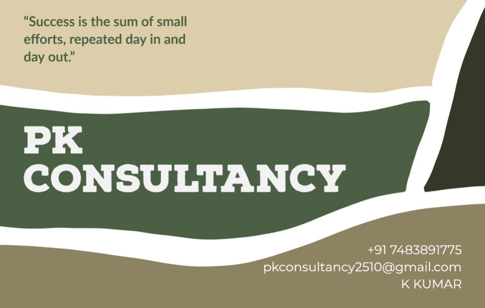

A database management system (DBMS) is system software
for creating and managing databases. A DBMS makes it possible for end users to create, protect, read,
update and delete data in a database. The most prevalent type of data management platform, the DBMS essentially
serves as an interface between databases and users or application programs, ensuring that data is consistently
organized and remains easily accessible.
The DBMS manages the data; the database engine allows data to be accessed, locked and modified; and the database
schema defines the database's logical structure. These three foundational elements help provide concurrency,
security, data integrity and uniform data administration procedures. The DBMS supports many typical database
administration tasks, including change management, performance monitoring and tuning, security, and backup and
recovery. Most database management systems are also responsible for automated rollbacks and restarts as well as
logging and auditing of activity in databases and the applications that access them.
The DBMS provides a centralized view of data that can be accessed by multiple users from multiple locations in a
controlled manner. A DBMS can limit what data end users see and how they view the data, providing many views of a
single database schema. End users and software programs are free from having to understand where the data is
physically located or on what type of storage medium it resides because the DBMS handles all requests.
The DBMS can offer both logical and physical data independence to protect users and applications from having
to know where data is stored or from being concerned about changes to the physical structure of data.
So long as programs use the application programming interface (API) for the database that the DBMS provides,
developers won't have to modify programs just because changes have been made to the database.
pkconsultancy2510@gmail.com
+91 7483891775
Ask Question
Copyright © Kiran Kumar S K